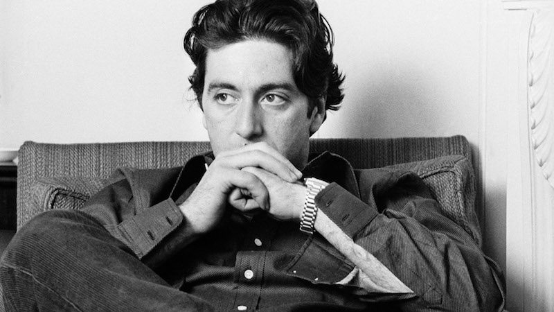

Alfredo James Pacino
A timeless method actor

A young Al Pacino in one of his memorable intense looks
Here is a time line of Al Pacino's life:
- 1940s - Born in East Harlem, New York City. Son of Italian American parents, they divorced when he was two years old and he moved with his mother to live with her parents, Kate and James Gerardi, who were Italian immigrants from Corleone, Sicily.
- 1950s - Growing up in the Bronx, Pacino acted in basement plays in New York's theatrical underground but was rejected as a teenager by the Actors Studio. He joined the HB Studio, where he met acting teacher Charlie Laughton, who became his mentor and best friend. In this period, he was often unemployed and homeless, and sometimes slept on the street, in theaters, or at friends' houses.
- 1960s - After four years at HB Studio, Pacino successfully auditioned for the Actors Studio, a membership organization of professional actors theater directors, and playwrights in the Hell's Kitchen neighborhood of Manhattan. Pacino studied "method acting", a range of training and rehearsal techniques that seek to encourage sincere and emotionally expressive performances, built on Stanislavski's system.
- 1970s - His role as a heroin addict in The Panic in Needle Park (1971) brought Pacino to the attention of director Francis Ford Coppola, who cast him as Michael Corleone in what became a blockbuster Mafia film, The Godfather (1972). Pacino's performance earned him an Academy Award nomination. In 1973, Pacino was nominated for an Academy Award for Best Actor after starring in Serpico, based on the true story of New York City policeman Frank Serpico, who went undercover to expose the corruption of fellow officers. In 1974, Pacino reprised his role as Michael Corleone in the sequel The Godfather Part II and was nominated a third time for an Oscar. n 1975, he enjoyed further success with the release of Dog Day Afternoon, based on the true story of a bank robber and was again nominated for Best Actor. In the the courtroom drama ...And Justice for All. Pacino was lauded by critics and nominated for the Best Actor Oscar for a fourth time.
- 1980s - His performance in Scarface (1983), directed by Brian De Palma, proved to be a career highlight and a defining role. Pacino earned a Golden Globe nomination for his role as Cuban drug lord Tony Montana. In 1989's Sea of Love, he portrayed a detective hunting a serial killer who finds victims through the singles column in a newspaper. The film earned solid reviews.
- 1990s - In 1991, Pacino starred in Frankie and Johnny with Michelle Pfeiffer, who co-starred with Pacino in Scarface. Pacino portrays a recently paroled cook who begins a relationship with a waitress (Pfeiffer) in the diner where they work. In 1993, Pacino won the Academy Award for Best Actor, for his portrayal of the blind U.S. Army Lieutenant Colonel Frank Slade in Martin Brest's Scent of a Woman. Pacino starred alongside Sean Penn in the crime drama Carlito's Way in 1993, in which he portrayed a gangster released from prison with the help of his lawyer (Penn). In 1997 he played Satan in the supernatural thriller The Devil's Advocate, that was a success at the box office.
- 2000s - In 2002 Pacino was directed by Christopher Nolan on Insomnia, a remake of the Norwegian film of the same name, co-starring Robin Williams. He next starred as lawyer Roy Cohn in the 2003 HBO miniseries Angels in America. For this performance, Pacino won his third Golden Globe, for Best Performance by an Actor, in 2004.
- 2010s - Pacino played Jack Kevorkian in an HBO Films biopic titled You Don't Know Jack, which premiered April 2010. The film is about the life and work of the physician-assisted suicide advocate. The performance earned Pacino his second Emmy Award for lead actor and his fourth Golden Globe award. He starred alongside Brad Pitt and Leonardo DiCaprio in Quentin Tarantino's comedy-drama Once Upon a Time in Hollywood, released in 2019. The same year Pacino starred as Teamsters chief Jimmy Hoffa, alongside Robert De Niro and Joe Pesci, in Martin Scorsese's Netflix film The Irishman, based on the 2004 book I Heard You Paint Houses by Charles Brandt; this was the first time Pacino was directed by Scorsese, and also received an Academy Award for Best Supporting Actor nomination.
"Either I act or I die"
--Al Pacino